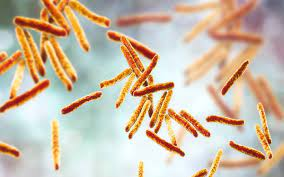

Bactérias são organismos unicelulares que não possuem núcleo definido nem organelas membranosas. Podem ser classificadas de acordo com o seu formato, sendo as formas mais comuns a esférica, a de bastão e a espiralada. Muito conhecidas por causarem doenças nos seres humanos, as bactérias apresentam também sua importância, atuando, por exemplo, na decomposição da matéria orgânica e sendo utilizadas na fabricação de alimentos, como iogurtes.
O papel das bactérias no corpo humano
As bactérias desempenham um papel fundamental no corpo humano e estão envolvidas em diversas funções essenciais para a nossa saúde, como na digestão, síntese de vitaminas, dentre outros.
- Microbiota intestinal : O intestino humano abriga trilhões de bactérias, conhecidas como microbiota intestinal. Essas bactérias auxiliam na digestão de alimentos, na absorção de nutrientes e na produção de vitaminas, como a vitamina K e algumas vitaminas do complexo B.
- Sistema imunológico:As bactérias no intestino também desempenham um papel importante na regulação do sistema imunológico. Elas ajudam a treinar o sistema imunológico a distinguir entre substâncias estranhas e amigáveis, prevenindo reações autoimunes.
- Produção de metabólitos: As bactérias produzem metabólitos, como ácidos graxos de cadeia curta, que desempenham um papel importante na saúde do cólon e podem estar associados à redução do risco de doenças intestinais.
- Preveção de infecções: A microbiota normal compete com patógenos potenciais, impedindo seu crescimento e reduzindo o risco de infecções.
- Barreira protetora: Algumas bactérias na pele e nas membranas mucosas atuam como uma barreira protetora contra patógenos invasores, competindo por recursos e espaço.
Bactérias benéficas na alimentação e indústria
As bactérias também têm grande importância na indústria, principalmente a alimentar. São usadas, por exemplo, na fabricação de vinagre e iogurte. Também há a toxina botulínica, produzida pela espécie Clostridium botulinum. Essa toxina é bastante utilizada para amenizar rugas e linhas de expressão.
- São utilizados na fabricação de antibióticos e substâncias, como a acetona e o ácido glutâmico.
- Podem auxiliar na limpeza de substâncias prejudiciais ao meio ambiente, como pesticidas e até mesmo petróleo e substâncias radioativas.
- A bactérias fermentadoras degradam parcialmente moléculas orgânicas ricas em energia, podendo resultar em diversos produtos, dependendo da substância e do micro-organismo que desempenhou tal função. O álcool etílico e o ácido lático podem ser resultantes deste processo; e desses são fabricadas bebidas, por bactérias do gênero Acetobacter; e coalhadas e iogurtes, pelos gêneros Lactobacillus e Streptococcus.
- Podem ser empregadas na produção de drogas terapêuticas, como antibióticos como a Tirotricina, vitaminas, hormônio de crescimento e insulina; e na fabricação de determinadas enzimas e de alcoóis;
Exemplos e bactérias
Benéficas
- Lactobacilos:Ajudam na tarefa de manter o intestino saudável. Há diversos tipos de lactobacilos, e eles costumam ser utilizados na fabricação de leites fermentados, iogurtes, coalhadas e queijos, entre outros alimentos
Patogênicas
- Mycobacterium tuberculosis:Bactéria maléfica que causa a doença Tuberculose 